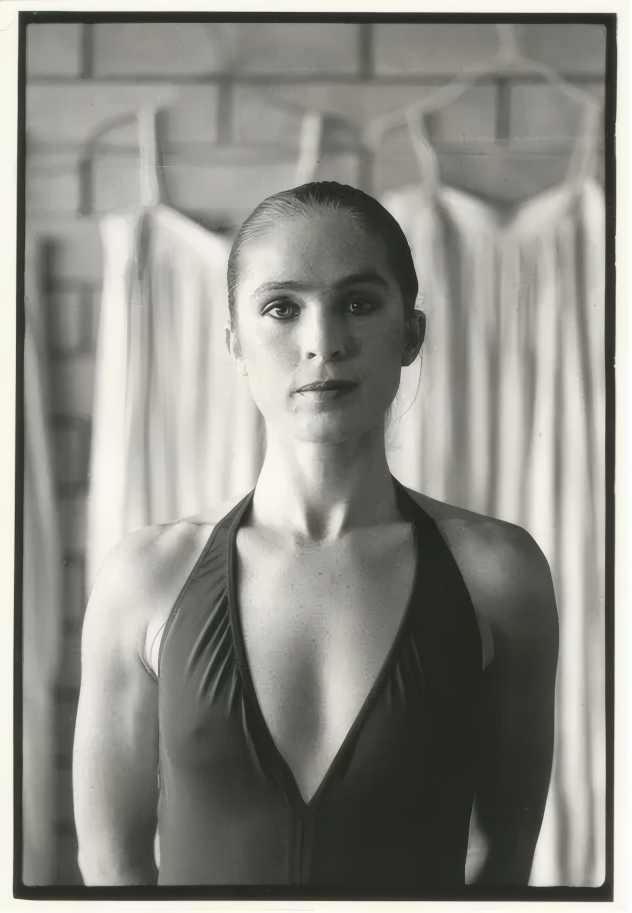

The Living History
Born in Whakatāne in 1955, Kilda Mori Northcott MNZM has played a defining role in the development of contemporary dance in Aotearoa New Zealand. Her career spans more than five decades and mirrors the emergence of contemporary dance from a small experimental movement into one of New Zealand's most respected performing arts. As a dancer, teacher, mentor, collaborator and advocate, Northcott has helped shape generations of performers while remaining one of the country's most enduring and influential dance artists.
Northcott's journey into dance began in the Eastern Bay of Plenty, where she trained in classical ballet at the Ruby Conway School of Dance in nearby Kawerau. Her early education was grounded in the discipline and technical precision of classical ballet before she relocated to Auckland to continue her studies at the New Zealand Dance Centre under two of New Zealand's most respected dance educators, Russell Kerr and Basil Pattison. The Dance Centre was one of the country's foremost professional training institutions during the 1960s and 1970s, producing many dancers who would go on to establish New Zealand's modern dance movement. Northcott's training there gave her a strong classical foundation while exposing her to emerging contemporary techniques that were beginning to transform dance internationally.
Like many ambitious New Zealand dancers of her generation, Northcott looked overseas to broaden her artistic horizons. During the mid-1970s she travelled to New York City, then the epicentre of contemporary dance innovation. There she studied the techniques of Merce Cunningham and José Limón, absorbing the revolutionary ideas that were redefining movement in the twentieth century. Cunningham's exploration of chance, space and independence between dance and music, combined with Limón's emphasis on breath, weight and human expression, profoundly influenced Northcott's artistic philosophy. Rather than simply reproducing overseas styles, she returned to New Zealand determined to help forge a uniquely New Zealand form of contemporary dance that reflected the country's own landscapes, people and culture.
That opportunity arrived in 1977 when Northcott became one of the founding members of Limbs Dance Company, alongside Chris Jannides, Mary Jane O'Reilly, Debbie McCulloch, Julie Dunningham and Mark Baldwin. Contrary to the traditions of formal theatre, Limbs was established following a gathering of dancers at Rongomaraeroa Marae in Pōrangahau, Hawke's Bay, where the company's philosophy of accessibility and artistic experimentation first took shape. Limbs rejected the idea that dance belonged only in concert halls and instead sought to take performance directly to communities throughout New Zealand.
Throughout the late 1970s and 1980s, Northcott helped pioneer a new era of professional dance in New Zealand. Limbs performed not only in traditional theatres but also in university campuses, schools, prisons, music festivals, shopping centres, nightclubs, theatre foyers and outdoor public spaces. Their productions combined classical technique with jazz, disco, pedestrian movement and popular music, deliberately breaking down the "fourth wall" that had long separated performers from audiences. This approach attracted thousands of New Zealanders who had never previously experienced contemporary dance and fundamentally changed public perceptions of the art form. Limbs became the first contemporary dance company in New Zealand to achieve widespread national popularity and is now widely regarded as one of the country's most significant performing arts institutions.
As both a founding performer and teacher within Limbs, Northcott was central to the company's success. Her technical mastery, expressive physicality and willingness to embrace experimentation made her one of its defining artists. She performed works by leading New Zealand choreographers including Mary Jane O'Reilly, Chris Jannides, Mark Baldwin and, later, Douglas Wright, helping establish a distinctly New Zealand vocabulary of movement that blended international contemporary dance practices with local identity and storytelling. The company's collaborations with musicians such as Split Enz, Don McGlashan, Jack Body and Philip Dadson further expanded contemporary dance's audience and cultural influence.
Northcott's influence extended well beyond Limbs. During the early 1980s she became an important teacher and mentor within the company, contributing to the training of young dancers entering the profession. Among those who benefited from the Limbs environment was Douglas Wright, then a former competitive gymnast with no formal dance experience. Wright later acknowledged the significance of the training and mentorship he received from Northcott, Mary Jane O'Reilly and the Limbs community after joining the company in 1980.
A defining chapter of Northcott's career began through her long creative partnership with Douglas Wright. When Wright established the Douglas Wright Dance Company in 1989, Northcott became one of its founding members and one of his closest artistic collaborators. Over the following decade she performed in many of Wright's landmark productions, helping bring to life some of the most acclaimed works in New Zealand dance history. Wright frequently described Northcott as his artistic muse, recognising her extraordinary ability to communicate emotional complexity through movement. In his memoir Ghost Dance, he famously wrote that she "danced in the same way the Mona Lisa smiles—calm, inscrutable, seeing nothing, seeing everything."
Northcott's performances became synonymous with Wright's highly physical and deeply philosophical choreography, which explored themes of mortality, spirituality, sexuality, memory and human vulnerability. Rather than functioning simply as an interpreter of choreography, she became an active creative collaborator whose maturity, intuition and expressive intelligence helped shape the emotional language of Wright's works. Together they contributed to productions that earned international recognition and established New Zealand contemporary dance on the world stage through tours across Australia and Europe.
Alongside her performing career, Northcott developed an enduring reputation as a teacher and mentor. She has worked extensively with dancers of all ages, encouraging an approach that balances technical excellence with curiosity, creativity and authentic human expression. Her teaching philosophy reflects the belief that dance is not simply an athletic discipline but a lifelong artistic practice capable of evolving throughout every stage of life.
Rather than retiring from performance, Northcott has continued to redefine what it means to be a professional dancer. Through Bipeds Productions and long-standing collaborations with choreographer Alyx Duncan, she has become one of New Zealand's strongest advocates for mature performers. Their work challenges conventional assumptions that professional dance belongs exclusively to the young, demonstrating instead that older bodies possess unique histories, emotional depth and lived experience that enrich performance in ways impossible to replicate through youthful virtuosity alone. These productions have become important contributions to international conversations surrounding ageing, embodiment and representation within the performing arts.
Northcott's career has also become an important historical bridge between generations of New Zealand dancers. Having trained during the formative years of contemporary dance, helped establish Limbs Dance Company, collaborated with Douglas Wright during the emergence of his internationally acclaimed choreographic voice, and continued creating innovative work well into the twenty-first century, she embodies the living history of New Zealand dance itself. Few artists have participated so directly in every major stage of the country's contemporary dance development.
In recognition of her exceptional contribution to dance and the performing arts, Kilda Mori Northcott was appointed a Member of the New Zealand Order of Merit (MNZM). The honour acknowledged not only her achievements as an internationally respected performer, but also her decades of service as a teacher, mentor and advocate whose influence continues to shape New Zealand's artistic landscape.
Today, Kilda Mori Northcott remains one of the most respected figures in New Zealand dance. Her career stands as a testament to artistic courage, innovation and lifelong dedication. From a young ballet student in Kawerau to a pioneering founder of Limbs Dance Company, from the experimental studios of New York to the groundbreaking works of Douglas Wright, and from performer to mentor and champion of mature artists, Northcott's legacy is inseparable from the history of contemporary dance in Aotearoa. Through every stage of that journey, she has demonstrated that dance is not merely performance—it is a living record of experience, identity and human connection, continually evolving through those who dedicate their lives to its practice.

Creative Velocity (Productions by Decade)
Core Philosophy
"The body is a vessel of memory. Every movement I make today carries the echo of the marae floor in 1977, the rehearsal studios of Sydney in the 80s, and the cinematic landscapes of the present."
Artistic Eras
A chronological journey through the institutional and creative chapters of Kilda's fifty-year career.
Limbs Dance Company
Founding the company at Rongomaraeroa marae, Kilda helped democratize dance in Aotearoa. This era was defined by populist modernism, performing in nightclubs, prisons, and for royalty at the 1981 Royal Variety Performance.
Performance Catalog
A comprehensive historical record of primary casts and choreographic collaborations.
| Work Name | Premiere | Lead Choreographer | Institutional Context |
|---|
Visual Heritage Gallery
Direct archival captures from Kilda's career — click any image to enlarge.